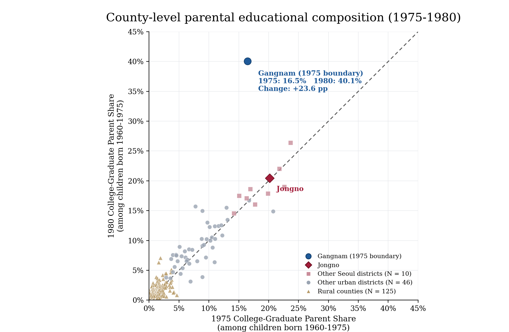
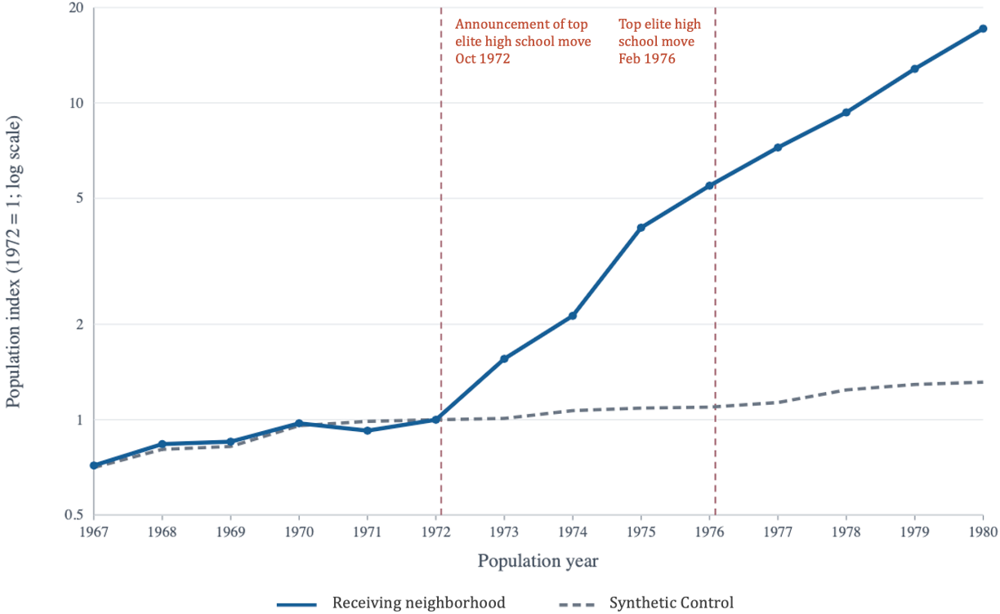
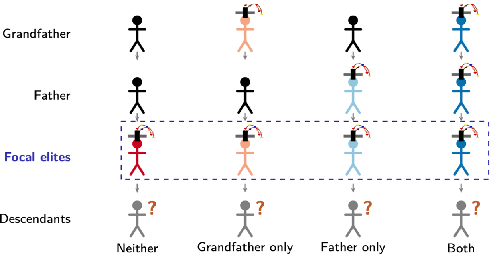
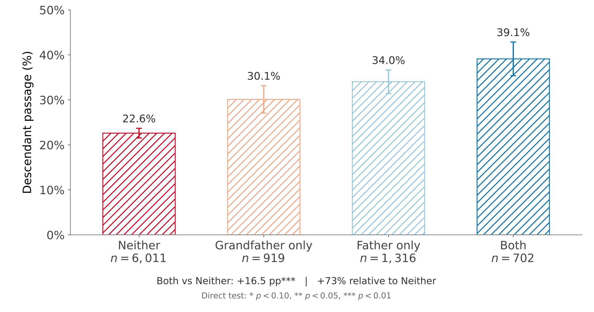

Selected Work in Progress
(as of Oct 2026)
Moving Opportunities? South Korea's Elite High School Relocation (1974–1987)
I explore how access to elite schools can shape spatial differences in segregation and upward mobility when top positions in society disproportionately come from this small set of institutions. I study the forced relocation of elite high schools in South Korea from Seoul's urban core to then-rural suburbs during authoritarian regimes. I first document descriptive evidence that these schools were widely viewed as pathways to success, and then estimate the effects of gaining and losing access on the upward mobility of native residents.


Intergenerational Transmission of Elite Status in Meritocracy: Joseon Korea (14-19C)
We explore how family history can shape the intergenerational transmission of elite status among individuals who enter the same elite institutions through merit-based selection. We study Joseon Korea, where elites were predominantly recruited through a merit-based civil service examination for nearly five centuries. By tracing both the ancestors and descendants of elite bureaucrats, we document substantial lineage-based gaps in elite transmission, even among bureaucrats who passed the same examination with similar ranks. We then investigate the mechanisms underlying these differences, including networks and cultural capital.

